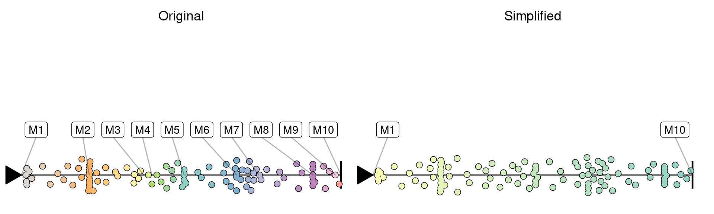
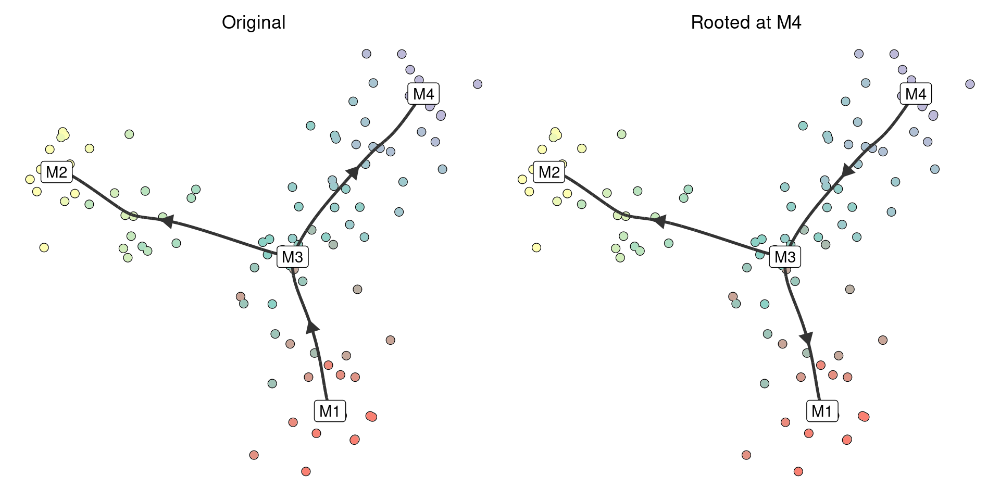
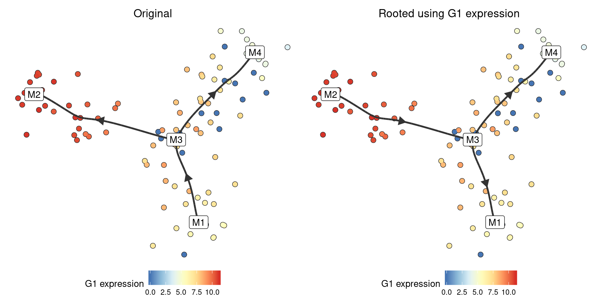
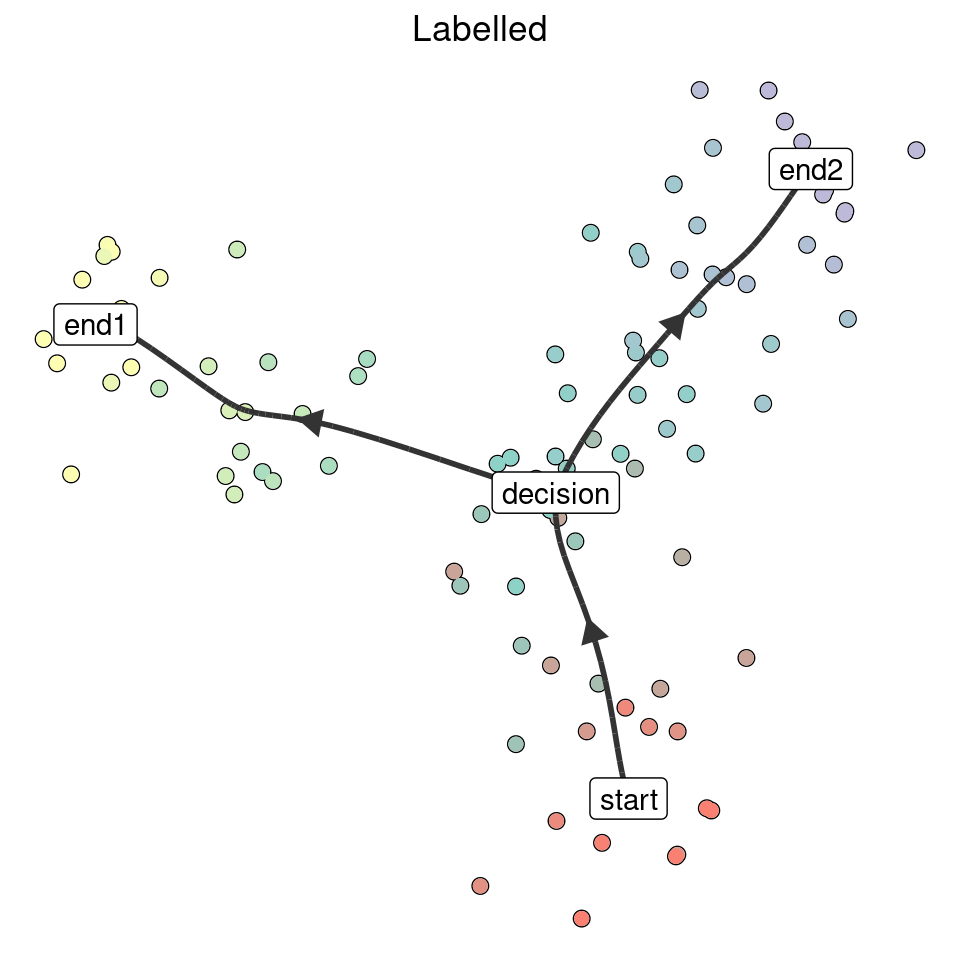
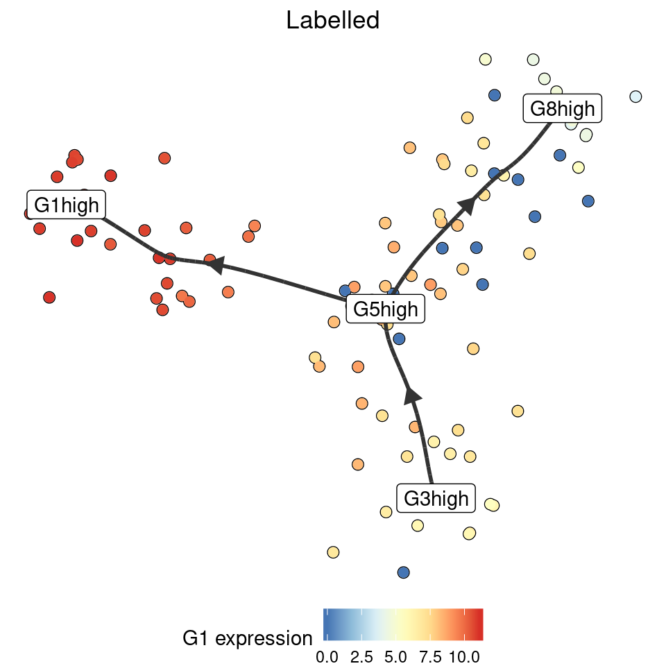

library(dyno)
library(tidyverse)Intermediate milestones can be removed by simplyfing the trajectory:
model <- dyntoy::generate_dataset(model = dyntoy::model_linear(num_milestones = 10))
simplified <- simplify_trajectory(model)
TI methods often do not have an idea where the root of a trajectory is. We provide two ways of rooting a trajectory. After rooting, all other edges will point away from the root.
set.seed(1)
model <- dyntoy::generate_dataset(model = dyntoy::model_bifurcating())If you know the milestone (or cell) that is at the start of the trajectory, you can directly call add_root:
model_rooted <- model %>% add_root(root_milestone_id = "M4")
If you know some marker genes that are highly expressed at the start of the trajectory, rooting can be done implicitely:
model_rooted <- model %>% add_root_using_expression("G1", expression_source = model)
We will add the ability to root a trajectory based on RNA velocity soon. See https://github.com/dynverse/dynwrap/issues/115
Annotating/labelling milestones is still experimental
Similarly as with rooting, there are also two ways to annotate the milestones within a trajectory:
model_labelled <- model %>% label_milestones(c(M1 = "start", M2 = "end1", M3 = "decision", M4 = "end2"))
model_labelled <- label_milestones_markers(
model,
markers = list(
G1high = c("G1"),
G5high = c("G5"),
G3high = c("G3"),
G8high = c("G8")
)
)
The ability to annotate milestones based on external information will be added in the future.
It is currently not yet straightforward to “split” an edge of a trajectory.